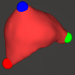
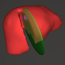
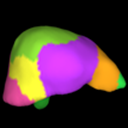
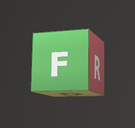

VR
AR
AR Screen
⋯
Exit AR
📍 Anchor
↻ Reset Pose
🗑 Clear Handles
机/床にレチクルを合わせてタップ
CUT
Fragment Selection
drag to move
Choose which fragment to keep:
Cancel Cut
Reset All?
This cannot be undone.
Reset
Cancel
Exit Application?
Unsaved progress will be lost.
Exit
Cancel
CUT
OBJ Drop
or click
OBJ Folder
Liver
Low grid
20
High grid
40
Vessel
Low grid
40
High grid
80
Small
Low grid
8
High grid
20
Advanced
Scale
normalizeRange
3.0
Liver
merge L/H
/
protection L/H
/
Vessel
merge L/H
/
protection L/H
/
Small
merge L/H
/
protection L/H
/
Smoothing
LowRes
factor
0.9
iterations
0
HighRes
factor
0.5
iterations
3
Skeleton Grid
70
Auto Seg accuracy vs speed (60=fast, 120=precise)
Cancel
Generate
Processing...
WASM Loading...
Error
Liver Simulation
v256
0
FPS
LowRes:
-
verts,
-
tets
HighRes:
-
verts,
-
tets
Smooth:
-
tris
LIVER SIMULATION
VISIBILITY
Liver Alpha
100%
DISPLAY
Normal
Auto Seg
Preset Seg
Normal
Auto Seg
Preset Seg
Volume
B
ACTION

🎯
Deform
D
Click mesh to place handle sphere
Handle Place
D
Sphere Size
0.30
(Clear handles to resize)
Deform
Undo Handle
Clear All

✂
Free Cut
X
Drag to cut mesh
Seg Overlay
Q
Undo Cut
U
Size:
1.0
Thickness:
0.40
Preview
Execute Cut
Cut Mode

🔲
Seg Cut
Q
Click to select & cut segments
Liver Select
F
Portal Select
G
Seg Cut
Z
Seg Undo
Clear Selection
K

⟳
Transform
T
Reset
Exit
Esc
Parameters
Edge Compliance:
1e+0
Vol Compliance:
0
Damping:
0.980
Substeps:
3
Gravity X:
0.0
Gravity Y:
0.0
Gravity Z:
0.0
Volume Monitor
drag
VISIBILITY
Liver Alpha
100%
DISPLAY
Normal
Auto Seg
Preset Seg
VOLUME
REMNANT
-- ml
--%
ACTION
🎯
Deform
Handle Place
Deform
Undo Handle
Clear All
✂
Free Cut
Seg Overlay
Undo Cut
⬡
Seg Cut
Liver Select
Portal Select
Seg Cut
Seg Undo
Clear Selection
⟳
Transform
Params
Reset
Exit VR
Parameters
Close
Edge Compliance
0
Vol Compliance
-99
Damping
0.980
Substeps
3
GRAVITY
X
0.0
Y
0.0
Z
0.0